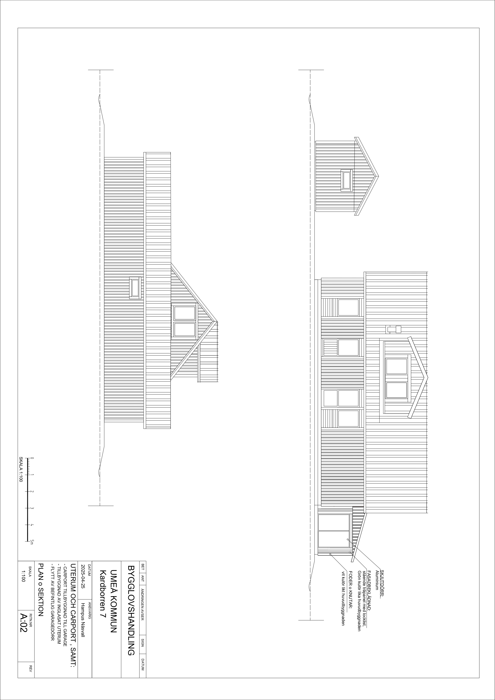

Projekt & arbetsmoment
Utvalda projekt och arbetsmoment från KMX Entreprenad.
Referensprojekt – Carport på Umedalen
Sex utvalda bilder visar projektet från bygglovsritningar till carportens byggnation. Det fullständiga projektet finns på den separata referensprojektsidan.

Fasadritning
Byggnadens utformning och fasader.

Bygglovsritning
Underlag för bygglov och fortsatt projektering.

Planritning
Planlösning med mått, rum och funktion.

Stomresning
Carportens bärande konstruktion växer fram.

Takläggning
Takstomme och takläggning under arbetets gång.

Färdig carport
Carporten efter genomförda byggmoment.
Mark, rör & ledningar
Arbetsmoment med schakt, rör, ledningsstråk, återfyllning och förberedande markarbete.

Maskinellt markarbete
Schakt, fyllning och återställning där ytor och omgivning behöver hanteras noggrant.

Röranslutningar
Synliga rör och anslutningar inför kontroll och fortsatt markarbete.

Ledningsstråk
Flera rör och ledningar som behöver planeras och skyddas i rätt ordning.
Grundläggning & ytor
Förberedelser inför grund, platta och hårdgjorda ytor där nivåer och underlag styr slutresultatet.

Maskinresurs
Grävmaskin och utrustning för schakt, masshantering och markplanering.

Platta & underlag
Förberedd yta för platta, grund eller hårdgjord mark.

Form & nivåer
Formning och justering av nivåer inför nästa steg.
Övriga projekt
Praktisk erfarenhet från arbetsplatser där maskiner, material och flera moment behöver planeras i rätt ordning.

Schakt & anslutning
Markarbete runt rör och anslutningar.

Byggarbetsplats
Arbetsmiljöer där flera yrkesgrupper och moment möts.

Schakt nära byggnad
Markarbete där åtkomst och säkerhet påverkar arbetsmetoden.